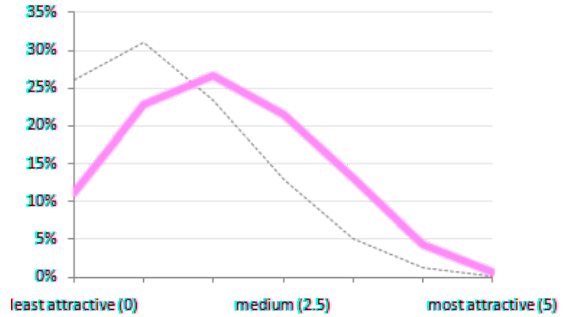
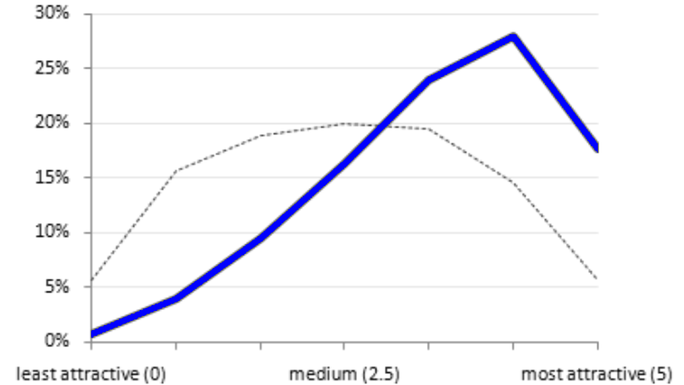

The notion that it’s “feminization” that is causing “woke” culture to
have more toxic traits, e.g. cancelling someone for suggesting that riots might not be a good idea
is a theory that we can put to the test: There appear to be
anthropological examples of matriarchal societies, e.g. the Amazons. Do
the Amazons and/ There is a meme out there that claims that women find most men not
very attractive. This meme is frequently posted on Twitter.
Let’s look at the source data for that, which comes from a 2009 OKCupid blog post:
Here we see two different lines:
The dashed line shows how attractive female OK Cupid users thought
men were in the first 2000s decade. This is the chart which gets
duplicated, remade, and spread over misogynistic social media.
The solid pink line how likely a woman was to message a given man. As
we can see, men rated by women as a 3 or 4 (on the traditional 1 to 10
scale) got the most messages from women.
Compare this to how men rated women in terms of attractiveness:
 The dashed line shows that, given a woman’s picture, the attraction
level was a normal distribution.
Women with an attractiveness of 7 to 9 got the most messages from
men.
Point being, how attractive a woman was significantly affected how
likely a man was to message her, but how attractive a man was something
that, if anything, would make the woman less likely to message him.
As one Medium post written by a woman puts it:
To make a person’s attractiveness go up, we need more than just
appearance
Like the “feminization” theory, we can put this theory to the test.
Show about 20-50 pictures of random men to heterosexual women and have
them rate them, and do the same with female pictures and heterosexual
men. I am surprised that no one has tried to replicate these results.1,2
I am well aware Twitter’s name these days is “X” and not “Twitter”.
However, for the sake of keeping things unambiguous I will continue to
call this site Twitter.
The issue with Twitter is this: It does not have a “log out”
button any more!3
In order for me to log out of Twitter, I have to delete all of my
cookies at x.com. This comes off as slimy and unethical to me, or to
quote The Eagles:
You can check out any time you like, but you can never leave
I debunk other incel myths
in a
previous blog.
The attached pictures are screenshots from a 2009 OKCupid blog
which is no longer online. The use of these
images is fair use because, in order to properly comment on and provide
research about a now offline blog whose data has been copied and
distorted, I need to show the original data.
1: Rudder, who wrote the 2014 book “Dataclysm”, is the same person who wrote that OKCupid study, so that book is not an independent replication.
2: There is a 1995 study where women rate men’s attractiveness based on an overview of their personality.
3: Actually, Twitter still has a “Log out” button but it’s pretty well hidden
The OK Cupid chart
How
attractive did women find men in 2009?
How attractive
did men find women in 2009?
The Twitter sinkhole
See also
Picture attribution
Footnotes